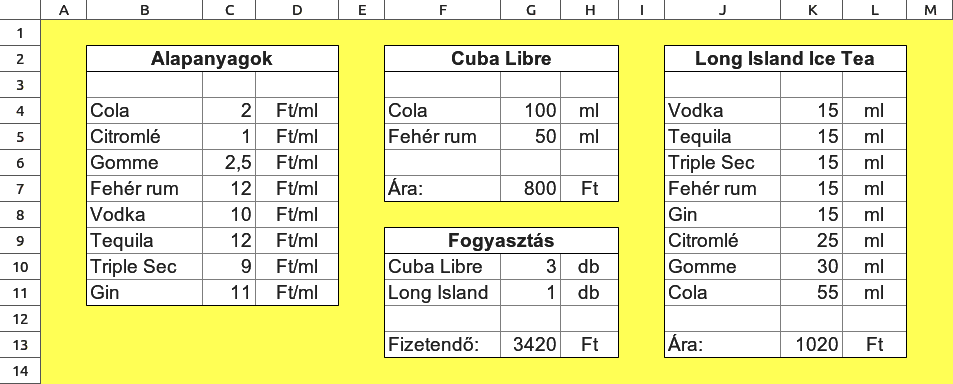

1Mit csináltunk a félévben?
while (b != 0) {
t = a%b;
a = b;
b = t;
}
Gépeket terveztünk, amelyek adott feladatot megoldanak. Ezen gépek szöveges leírását adtuk C nyelven.
2. Nézd meg, világít-e a lámpa.
Ha igen, ugorj a 7. pontra.
3. Nyomd meg az m↓T gombot.
4. Nyomd meg az A←B gombot.
5. Nyomd meg a T↑B gombot.
6. Ugorj a 2. pontra.
7. Kész, az eredmény A-ban.
Megtanultunk algoritmizálni, amihez az eszközkészletünk:
- változók: szükséges információ tárolása,
- feltételes elágazások és ciklusok: megadják a megoldás menetét,
- függvények: újrahasznosítható programrészletek egy apró feladat megoldására,
- modulok: újrahasznosítás nagy léptékben.
Megismertünk adatszerkezeteket (struktúrák, tömbök, listák, fák):
- a komplex valóság pontosabb modellezésében segítenek,
- hatékonyan használják ki a gépünk erőforrásait.
„Mellékesen” megtanultuk a C nyelvet.
2Komplex példa: táblázatkezelő
A mai órán: írjunk egy egyszerű táblázatkezelő programot!

3Egy táblázat anatómiája
| A | B | C | D | |
|---|---|---|---|---|
| 1 | ||||
| 2 | ||||
| 3 | ||||
| 4 | ||||
| 5 | ||||
| 6 | ||||
| 7 |
Kihívások:
- A képletek értelmezése.
- A kereszthivatkozások feloldása.
Gondoljuk meg: a fizetendő összeg kiszámolásakor a képlet hivatkozik az egyes italok árára (amiket megszoroz a fogyasztott mennyiséggel). Az italok árai további cellákra hivatkoznak (összetevők ára és mennyisége). Az igazi problémát az jelenti, hogy nagyon nehéz feladat megtalálni azt a bejárási sorrendet, amelyen végighaladva csupa már kiszámolt celleértéket használunk csak fel.
A jelen esetben ez azt jelentené, hogy előbb kiszámoljuk az egyes italok árait, majd ezután számoljuk ki a fizetendő összeget. Csakhogy a Long Island Ice Tea egy jóval későbbi cellában helyezkedik el, mint a fogyasztás, így előre-hátra kéne ugrálni a cellák között.
Egy összetett lapon annyira bonyolult összefüggések lehetnek az egyes cellák között, hogy a kiszámolás útvonalának a feltérképezése annyira nehézzé válik, amit már nem érdemes leprogramozni. Ehelyett azt választjuk, hogy elindulunk a bal felső cellától és jobbra lefelé haladva sorra vesszük a cellákat.
Ha egy cella hivatkozik egy másik értékére, akkor elugrunk oda, és megnézzük azt az értéket. Ha az is hivatkozik egy másikra, akkor tovább ugrunk egészen addig, amíg olyan cellákig nem érünk, amelyek rögtön kiértékelhetőek (pl. egy szám vagy csupa számokból álló képlet van bennük, vagy már korábban kiszámoltuk az értéküket).
Előfordulhat egy olyan eset, amikor egy cella hivatkozik egy másik cella értékére, ami viszont hivatkozik az elsőre. Például az A3 cella képlete: A3 = B4 * 2, míg a B4-é: B4 = 123 + A3. Az ilyen jellegű hivatkozások nem oldhatóak fel, nem tudjuk meghatározni az értéket. Ugyanakkor a programunk végtelen ciklusba kerülhet miattuk, ezért fel kell derítenünk, vagy a számolás során észre kell vennünk az ilyen csapdákat. Ráadásul egy ilyen, ún. körkörös hivatkozás előfordulhat több lépésben is – például az A3 hivatkozik a B4-re, ami hivatkozik a C8-ra, ami az A7-re, ami az A3-ra. A programnak ezeket is észre kell vennie, hiszen itt is ugyanúgy előállna a végtelen rekurzió.
Ezeket a problémákat kell megoldania a programunknak.
Kifejezések értelmezése (parsing)
5Matematikai kifejezések kiértékelése

Matematikai kifejezések
- Postfix alak:
4 5 7 + * - Prefix alak:
* 4 + 5 7 - Infix alak:
4 * (5 + 7)
Ezek mind ugyanazt jelentik.
Infixes alak: 4 * (5 + 7)
Ezt összetett feladat értelmezni: zárójelek, precedenciaszabályok, …
A nyelvi elemzés (parse, parsing) „Helló világ”-ja a négy alapműveletet és a zárójeleket ismerő matematikai kifejezések értelmezése.
Furcsa vagy nem, a legbonyolultabb a fenti három közül a hétköznapi infixes
alak, amely esetén az operátort a két operandus közé tesszük. Itt megszoktuk
azt, hogy a műveleteknek precedenciája van. Például a szorzásé magasabb,
mint az összeadásé. Hogy az 5+7 összeget szorozzuk 4-gyel,
a kifejezésben zárójelezni is kell azt.
A postfixes alak esetén az operandusok után van az operátor.
Minden operátor az előtte lévő két operandusra vonatkozik. Pl.
4 5 7 + *, a +
jel az előtte álló 5-ösre és 7-esre. Ezt lehetne zárójelezni is, de felesleges,
hiszen mindig tökéletesen egyértelmű. Nincsen szükség precedenciaszabályokra sem.
Példa egy bonyolultabb képletre:
(3+4)*(5+6) = 3 4 + 5 6 + *
A prefixes alak esetén az operátor az operandusok előtt van. Ez egyrészről lehetne a postfixes visszafelé, másrészről viszont szokás mindig zárójelezni. Ugyanis zárójelezés esetén könnyedén tudjuk azt is jelezni, ha egy operátornak kettőnél több operandusa van:
(+ 4 5 6)
Ez a 4, 5 és 6 számok összege. Ezt infix alakban le sem tudjuk írni, csak két külön összeadással – amely egyrészről ugyanazt jelenti, másrészről viszont korántsem ugyanaz:
4+5+6 = (+ 4 (+ 5 6))
6A nyelvtani szabályok, EBNF
Kezdetnek próbáljuk megfogalmazni, hogy néz ki egy egész szám:
Decimális egész szám
- Egy szám legalább egy számjegyből áll.
- Egy számjegy a '0', '1', '2', '3', '4', '5', '6', '7', '8', '9' szimbólumok valamelyike.
- Ha a szám több számjegyű, akkor a legelső számjegy nem lehet nulla.
2. előadás
A fenti, szabad nyelvi leírás nehezen áttekinthető és nem formális, ami nehezíti az algoritmizálást.
Az egész szám formális leírása EBNF alakban:
szám ::= számjegy | (számjegy_nemnulla számjegy+) számjegy_nemnulla ::= '1'|'2'|'3'|'4'|'5'|'6'|'7'|'8'|'9' számjegy ::= '0'|számjegy_nemnulla
::=egy nyelvtani szabály definíciója'c'egy tényleges karakter a szövegben|opció (vagy az egyik elem van ott, vagy a másik)+egy, vagy több ugyanolyan elem()egy együtt kezelt egység (ua. mint algebrában)- egymás után írt szimbólumok pedig egymást kell kövessék a szövegben.
Többféle EBNF alak létezik, mi most a W3C konzorcium szabványát használjuk.
7A rekurzív alászálló értelmező
descent
parser
A sztringet értelmező program felépítésének egyik módja, ha az ún. „rekurzív alászálló értelmezőt” valósítjuk meg. Ebben minden szabálynak megfeleltetünk egy függvényt. A függvény átveszi az értelmezendő sztring címét, amit a futása során a sikeresen felismert szakasz végére állít át. (Ha nem ismert fel semmit, akkor nem változtatja meg.) A függvény a visszatérési értéke logikai típusú, ami igaz, ha sikeresen felismert egy szakaszt, és hamis, ha nem történt illeszkedés. Minden függvény ezentúl paraméterként átvett változók címébe tölti a felismert szakasz értelmezésével kapcsolatos eredményeit.
Minden szabályhoz egy függvény:
int szabaly(char **szoveg, ……… *eredmeny);
Ez átvesz egy pointert, amely az értelmezendő szövegrészre mutat. Ha sikeres az illesztés, akkor igazzal tér vissza, és lépteti ezt a pointert, mégpedig az illeszkedő szövegrész utánra. (Ezért veszi át cím szerint.) A függvény további paraméterei pedig arra valók, hogy az illesztés során előálló adatokat oda írja a függvény.
Az illesztő függvény általában így néz ki (ez most egyetlen számjegyet illeszt):
int szamjegy(char **szoveg, char *szamjegy) {
char *ptxt;
ptxt = *szoveg; // munkaváltozat
if (ptxt[0]>='0' && ptxt[0]<='9') { // számjegy?
*szamjegy = ptxt[0];
*szoveg = ptxt+1;
return 1; // illeszkedik :)
}
else
return 0; // nem illik rá :(
}
Az illesztés menete a fenti példafüggvényre (amely egy számjegyet próbál illeszteni a szövegrészre) a következő:
- Készítünk egy munkaváltozatot
ptxt-be. Ahogy haladunk ennek a szabálynak a feldolgozásával, ezzel dolgozunk. - Megpróbáljuk számjegyként értelmezni az aktuális karaktert. Ha sikerült, akkor
- a paraméterként kapott változóba írjuk az eredményt,
- léptetjük az értelmezett szöveget,
- igazzal térünk vissza.
A ptxt változóra bonyolultabb szabályok esetén van igazán szükség. Mert ha a
szabály illesztése sikertelen, akkor a *szoveg mutatót nem állítjuk el! Ha sikeres,
akkor viszont beállítjuk a soron következő értelmezendő szövegrészre. Ez biztosítja ugyanis a
összefűzhetőséget, amit később fogunk megvizsgálni.
#include <stdio.h>
int szamjegy(char **szoveg, char *szamjegy) {
char *ptxt;
ptxt = *szoveg;
if (ptxt[0]>='0' && ptxt[0]<='9') {
*szamjegy = ptxt[0];
*szoveg = ptxt+1;
return 1;
}
else
return 0;
}
int main(void) {
/* a szöveg, aminek az elején számjegyet keres */
char szoveg[100] = "123 hello";
/* megpróbál illeszteni, és kiírja az eredményt */
int sikerult;
char talalat;
char *leptet = szoveg;
sikerult = szamjegy(&leptet, &talalat);
if (sikerult)
printf("Sikerült az illesztés: talalat = %c!\n", talalat);
else
printf("Nem sikerült az illesztés.\n");
/* mutatja, hol áll most a pointer */
printf("%s\n", szoveg);
int i;
for (i = 0; i < leptet-szoveg; ++i)
printf(" ");
printf("^\n");
return 0;
}
8Matematikai kifejezés – számok összege
Bonyolultabb, összetett szabályokat az ilyen függvények segítségével fogunk felépíteni. Lássuk, hogyan!
Minta (pattern) összeadások és kivonások leírására:
összeg ::= szám (('+' | '-') szám)*
A * tetszőleges számú (akár 0) ismétlést jelent.
A minta illeszkedik (match) ezekre a példákra:
2 234 + 14 1278 - 897 788 + 567 - 34
9Matematikai kifejezés – precedenciák
Fontos a precedencia: hogyan tudjuk bevezetni a szorzást/osztást?!
Nem vezethetjük be a '+' és '-' alternatívájaként:
kifejezés ::= szám (('+' | '-' | '*' | '/') szám)*

Mert így nem érvényesül az, hogy pl. a
2 + 3 * 6kifejezésben a szorzás a 3-ra és a 6-ra vonatkozik: 2+(3*6).
Ötlet: legyen a szorzás és osztás egy különálló egység, így azokat egyben kezeli az értelmező.
Ez azt jelenti, hogy egy új szabályt vezetünk be a szorzás és osztás számára.
kifejezés ::= összeg
összeg ::= szorzat (('+' | '-') szorzat)*
szorzat ::= szám (('*' | '/') szám)*
A szabályok jelentése a fentiek alapján a következő:
- A kifejezésünk egy összeg
- Az összeg szorzatokból áll (szorzatok összege)
- A szorzat pedig számok szorzata.
Nézzük meg, hogy hogyan értékelődik ki a 2+3*6:
2 + 3 * 6
szám szám szám
\___________/
szorzat szorzat
\________________________/
összeg
- A kifejezés elejére egy szorzatot próbál illeszteni az összeg kifejezés alapján.
- Egy szorzat egy számmal kezdődik – ez rendben van: '2' egy szám.
- Utána következhetne egy '*' vagy '/' és egy szám – ez nincs itt meg, hiszen '+' jön, de nem baj, mert egy szorzat lehet egy szám önmagában.
- Folytatjuk az összeg értelmezését és találunk is egy '+'-t, tehát megint egy szorzatnak kell jönnie.
- Ott egy szorzat: "3*6", amit tehát szorzatként ismerünk fel! Az eredményét összeadjuk az összeg első tagjával.
Figyeljük meg, hogy a fenti nyelvtan továbbra is leírja az összes esetet, amit az összeadás/kivonás vizsgálatakor megnéztünk, hiszen a szorzat bármikor leegyszerűsödhet egy egyszerű számmá, amivel visszakapjuk az eredeti, egy szabályból álló nyelvtant.
10Matematikai kifejezés – zárójelek
Ami egy kifejezés értelmezését bonyolulttá teszi, az a zárójel!
Minden zárójelen belül egy új kifejezés van: úgy kell értelmezni, mint az egészet, és önálló egységként kell kezelni. Ezen felül: tetszőleges mélységben egymásba ágyazható kifejezéseket kell értelmeznünk.
Megoldás: új szabályt kell bevezetni a zárójel lekezélésére – ezzel megoldjuk, hogy egy egységként legyen lekezelve (precedencia). Mi lehet egy zárójelpáron belül? Egy új matematikai kifejezés, vagyis a legalacsonyabb szabályunk! Ez egy rekurzió.
Új szabályt kell bevezetni a zárójel kezelésére:
kifejezés ::= összeg
összeg ::= szorzat (('+' | '-') szorzat)*
szorzat ::= tényező (('*' | '/') tényező)*
tényező ::= szám | zárójeles
zárójeles ::= '(' kifejezés ')'
Így értelmezhetővé válnak az alábbi alakok is:
nyelvtan!
2 + 3 * (4 - 8 * 2) 12 * ((3 - 4) * 14)
Kész a nyelvtan! Nézzük meg, hogyan lehet ezt programmá alakítani!
11A kiértékelő megírása I.
A rekurzív alászálló értelmező fentebb leírt függvényalakja könnyűvé teszi a nyelvtanok algoritmizálását.
Opcionalitás
'-'? számVagyis ott vagy van egy elem, vagy nincs:
char *szoveg = "-223";
if (szabaly_minusz(&szoveg, ………)) {
/* sikeres illeszkedés feldolgozása */
}
/* további részek feldolgozása */
Az opcionális elem feldolgozásának menete a következő.
Ha a szabaly() az illeszkedése sikeres volt,
akkor a szoveg mutató a
soronkövetkező, értelmezendő karakterre mutat, és a szabaly() „………”-al jelölt
argumentum(ok)ban visszaadta az illesztett rész feldolgozott eredményét.
Ilyenkor, kilépve az if blokkból a soronkövetkező szabályok már a
léptetett mutatót kapják meg.
Ha nem történt értelmezés, akkor egyszerűen tovább lépünk az if-en
és a változatlan mutatót kapják a további szabályok, vagyis ugyanonnan
próbálják értelmezni a sztringet, mint ahonnan a szabaly próbálta
sikertelenül.
Tetszőleges számú előfordulás
szám ::= nemnullaszámjegy bármilyenszámjegy*Vagyis lehet akár nulla, egy vagy sok illeszkedő rész:
char *szoveg = "223";
/* előző részek feldolgozása */
while (szabaly_barmilyenszamjegy(&szoveg, ………)) {
/* első és további illeszkedések feldolgozása */
}
/* további részek feldolgozása */
A működése hasonló a fentihez, csak a szabály
illesztése többször is megtörténik. Minden egyes sikeres illesztésnél
a szoveg pointer módosul, így a különböző
hívások eltérő szövegrészeken dolgoznak.
Legalább egyszeri előfordulás
név ::= vezetéknév keresztnév+Az if() felel az első előfordulásért, a ciklus a többiért:
char *szoveg = "Kiss István Pista";
/* előző részek feldolgozása */
if (szabaly_keresztnev(&szoveg, ………)) {
/* első illeszkedés feldolgozása */
while (szabaly_keresztnev(&szoveg, ………)) {
/* további illeszkedések feldolgozása */
}
}
else
return 0; /* nincs illeszkedés! */
A *-nál előfordulhat, hogy egyszer sem lépünk be a ciklusba, de akárhány iteráció is történhet.
Ha sikeres az első illesztés (if), akkor
feldolgozzuk, és egy while ciklussal addig próbálunk
illeszteni, amíg lehet. Az eredményeket pedig fokozatosan dolgozzuk
fel a ciklusmagban.
Akár sikeres volt az illesztés, akár nem, illetve akármennyiszer illesztettünk, mindenképpen a soronkövetkező, értelmezendő karakterre mutat a pointer a ciklus alatti kódrészekben.
Opciók
megszólítás ::= 'Tisztelt' ('Hölgyem'|'Uram')Kihasználjuk a logikai rövidzárat!
char *szoveg = "Tisztelt Uram!";
/* előző részek feldolgozása */
/* pointer az U betűre mutat */
if (szabaly_holgyem(&szoveg, ………)
|| szabaly_uram(&szoveg, ………)) {
/* bármelyik opció teljesül, itt értékeljük ki */
}
else
return 0; /* nem illeszkedett! */
/* további részek feldolgozása */
Az opcióknál ha az első szabály sikerrel értékelődik ki, akkor a logikai rövidzár miatt a másodikat már nem is próbálja meg illeszteni! Ha pedig nem sikerült az elsőt illeszteni, csak akkor próbálja meg a másodikat.
Az if belesejébe csak akkor lépünk, ha a szabályok valamelyike
sikeresen illeszkedett. Természetesen az argumentumokként kapott értékek
alapján, vagy az egyes szabályok visszatérési értékének elmentése segítségével
ellenőriznünk kell, hogy melyik szabály illeszkedett ténylegesen.
Egymásra következés
megszólítás ::= 'Tisztelt' címzettItt is kihasználjuk a logikai rövidzárat!
char *szoveg = "Tisztelt Uram!";
char *ptxt = szoveg;
if (szabaly_tisztelt(&ptxt, ………)
&& szabaly_cimzett(&ptxt, ………)) {
/* illeszkedés feldolgozása */
}
else
return 0; /* nem illeszkedett! */
/* további részek feldolgozása */
Csak siker esetén értékeli ki a második szabályt, tehát az
egymásrakövetkezés ki van kényszerítve, de vigyázni kell rá, hogy ha az első
szabály illeszkedett, akkor itt odébb lett állítva a pointer, és ezért
ilyenkor kiléphetünk úgy az if-ből, hogy nem volt teljes
illeszkedés, de a pointer olyan pontra mutat, ami túl van az első még
értelmezetlen karakteren. Ezért őt vissza kell állítani sikertelen esetben
(vagy ha függvényben vagyunk, meg sem változtatni a cím szerinti paramétert,
és visszatérni HAMIS értékkel.)
12A kiértékelő megírása II.
Buktató: vegyes logikai kifejezések?
if ((tisztelt(&szoveg, ………) && nev(&szoveg, ………))
|| hello(&szoveg, ………)) {
/* illeszkedés feldolgozása */
}
Ha tisztelt() illeszkedik, de nev() nem, akkor megpróbálja
hello()-t illeszteni, de tisztelt() elállította a mutatót! Ilyenkor
vissza kell állítani a mutatót a szöveg elejére az ÉS kapcsolat sikertelensége esetén,
és utána lehet megpróbálni hello()-t illeszteni.
Buktató: ciklusban egymásra következés?
while (szabaly1(&szoveg, ………) && szabaly2(&szoveg, ………) {
/* illeszkedés feldolgozása */
}
Ez sem jó ötlet. Itt is megsértjük a fenti szabályokat, miszerint ha sikerül az illesztés,
léptetjük a pointert, ha nem sikerül, akkor pedig marad. Ugyanis előfordulhat, hogy
szabaly1() illeszkedik, de szabaly2() nem. Ilyenkor a teljes kifejezés
értéke hamis, és a végrehajtás nem kerül be a ciklusmagba – de a szabaly1()
elállította a mutatót!
13A kiértékelő megírása III.
Egy bonyolultabb szabály C illesztő függvénnyé alakítva:
int osszeg(char **szoveg, int *ertek) {
char *ptxt = *szoveg;
int val;
if (szorzat(&ptxt, &val)) {
int val2; char c;
while (pluszminusz_szorzat(&ptxt, &c, &val2)) {
if (c == '+') val += val2;
else val -= val2;
}
*ertek = val;
*szoveg = ptxt;
return 1;
}
return 0;
}
Az első szorzat eredményét val-ban menti el, majd ( ('+'
| '-') szorzat)* illesztést próbál csinálni az egymásrakövetkezés és a
tetszőleges sázmú ismétlődés együttes alkalmazásával, és val mindig
megváltoztatja a történtek függvényében.
Itt szükség van még egy változóra (tmp), amelyben a további
szorzat részeredményeket eltárolhatjuk, hiszen a val
értékét csak mi változtathatjuk az első illeszkedés után.
A nyelvtani szabályok alapján az elemző kód megalkotása automatizálható. Erre vannak is programok, pl. a yacc. A Spirit pedig egy olyan függvénykönyvtár, amely a C++ nyelvet egészíti ki úgy, hogy a nyelv eszközeivel EBNF-szerű kifejezéseket tudunk megfogalmazni.
14Kifejezés kiértékelő működés közben
Példa bemenet:
3+4*5
az infoc-ről!
A teljes program letölthető erről a linkről: parser_ws.c.
Ez annyiban tud többet a fentiekben bemutatottnál, hogy bárhol elfogad
szóközöket is a kiértékelt kifejezésben (erre utal a nevében a ws szócska: whitespace).
A megvalósításában azonban mindenhol a fent bemutatottakat követi. Mivel a leírt
nyelvtanunk nem ismeri a negatív számokat, ezért csak pozitív és csak egész számokon
működik a program! Pl. 5+-3 azt fogja mondani, hogy nem tudja értelmezni.
A cellák kiértékelése
16A cellák kiértékelése
Térjünk át a táblázatkezelő részre. A cellák kiértékelése:
- meg kell különböztetni a szöveget és a képletet tartalmazó cellákat,
- fel kell tudni dolgozni a cellahivatkozásokat,
- észre kell venni a körkörös hivatkozásokat és jelezni kell őket.
| A | B | C | |
|---|---|---|---|
| 1 | |||
| 2 | |||
| 3 | |||
| 4 | |||
| 5 |
Kiértékelés menete pl. B2-re:
B2 → B1 → B5 → B4
A cellák bejárása rekurzívan történik:
FÜGGVÉNY kiszamol(cellacím) {
HA (van cella hivatkozás) {
kiszamol(hivatkozott cella);
}
cella érték beállítása;
}
Vagyis kiszámoljuk a hivatkozott cellák értékét, mert utána az aktuális cella értéke már megmondható. Rekurzió!
17A körkörös hivatkozás
| A | B | |
|---|---|---|
| 1 | ||
| 2 |
A probléma a fenti kóddal az, hogy ha körkörös hivatkozás van, akkor végtelen lesz a rekurzió. Kell egy megfelelő leállási feltétel.
A megoldást az jelenti, hogy a cellabejárás során megjelöljük a cellákat, ahol jártunk már. Így ha egy cellára visszajutunk, akkor az körkörös hivatkozást jelent. Ekkor hibaüzenetet adunk a cella címének megjelölésével. Amikor egy cella értékét sikeresen kiszámoltuk, a bejelölést megszüntetjük, így „teszünk rendet” magunk után.
FÜGGVÉNY kiszamol(cellacím) → logikai {
HA (jártunk itt)
VISSZA: HAMIS;
cella megjelölése; + jel
HA (van cella hivatkozás) {
HA (!kiszamol(hivatkozott cella))
VISSZA: HAMIS;
}
cellaérték beállítása;
cellajelölés törlése; - jel
VISSZA: IGAZ;
}
18A táblázat reprezentálása: az adatszerkezet
Maga a táblázat egy kétdimenziós tömb:
typedef struct tablazat {
cella **adat; /* 2D din. tömb */
int szelesseg;
int magassag;
} tablazat;
A táblázat egy cellája:
typedef struct cella {
char *tartalom; /* din. sztring */
double cachelt_ertek; /* ne kelljen többször */
int kiszamolva;
int mar_jartunk_itt; /* bejáráshoz */
} cella;
cella struktúrában a kiszamolva mező azt jelenti, hogy az adott körben már meghatároztuk a cella tartalmát. Ez két okból történhetett: a bejárás során már érintettük a cellát vagy egy korábbi cella hivatkozott rá és a hivatkozás feloldásakor ugrottunk ide. Ha a kiszamolva igaz, akkor a cachelt_ertek mező tartalmazza a cella érvényes értékét.
19Egy cella kiszámolása
int cella_kiszamol(tablazat *a_tablazat, int sor, int oszlop) {
cella *a_cella = &a_tablazat->adat[sor][oszlop];
if (a_cella->mar_jartunk_itt) return 0; // körkörös!
if (a_cella->kiszamolva) return 1; // már kész
a_cella->mar_jartunk_itt = 1;
double ertek;
if (kiertekel(a_cella->tartalom, &ertek, a_tablazat)) { // ok?
a_cella->cachelt_ertek = ertek;
a_cella->kiszamolva = 1;
a_cella->mar_jartunk_itt = 0;
return 1; // ok!
} else
a_cella->mar_jartunk_itt = 0;
return 0; // hiba
}
}
A cella_kiszamol() hívja a kiertekel()-t:
… és a kiertekel() hívja a cella_kiszamol()-t. Kölcsönös rekurzió!
20A cella módosítása
Csak akkor írhatunk bele, ha nem viszünk be körkörös hivatkozást:
void cella_modosit(tablazat *a_tablazat, int sor, int oszlop,
char *tartalom) {
char *regi = a_tablazat->adat[sor][oszlop].tartalom;
char *uj = (char *) malloc(strlen(tartalom) + 1);
strcpy(uj, tartalom);
/* megpróbáljuk betenni az újat */
a_tablazat->adat[sor][oszlop].tartalom = uj;
/* sikerült? */
if (cella_kiszamol(a_tablazat, sor, oszlop)) { // ok?
free(regi);
} else { // hiba!
free(uj);
a_tablazat->adat[sor][oszlop].tartalom = regi;
}
}
21Fordítási függőségek csökkentése
Minden modul mutassa a lehető legkisebb felület!
#include "tablazat.h"
int kiertekel(char *szoveg, double *ertek,
tablazat *a_tablazat);
Az elemzőnek egyedül a kiertekel függvényét ismeri a
táblázatkezelő, hiszen ez az ún. "kezdőszabály". Ez az a szabály, ami egy teljes kifejezés
szerkezetét leírja. Az egyes részleteket leíró szabályok függvényeit csak modulon belül hívjuk,
így ezeket a külvilágnak nem kell ismerniük.
Az elemző többi függvénye statikus – tehát a modulra nézve lokális.
#include "elemzo.h"
static int szokoz(char **txt) {...}
static int karakter(char **txt, char const *vals, char *talalat) {...}
static int szam(char **txt, double *val) {...}
static int cellacim(char **txt, char *oszl, int *sor) {...}
static int osszeg(char **txt, double *val, tablazat *tabla) {...}
static int szorzat(char **txt, double *val, tablazat *tabla) {...}
static int tenyezo(char **txt, double *val, tablazat *tabla) {...}
static int zarojeles(char **txt, double *val, tablazat *tabla) {...}
Miért jó, ha így csináljuk? Két okból. Egyrészt,
aki használja az elemzőt, nem kell gondolkodjon, hogy a sok számára érthetetlen
függvény közül melyiket kell hívja. Egy függvény érhető el, a kiertekel().
Másrészt a fejlécfájlt más forrásba is beillesztjük, ezért ha változik, azokat
a forrásokat is újra kell fordítani. Ha a kifelé nem mutatott részeket nem
írjuk bele, akkor az ottani változtatások miatt nem kell feleslegesen sok mindent
újrafordítani a programban.
22Táblázatkezelő DEMO
tablazatkezelo.zip
Utasítás: kiir
---+-----------+-----------+-----------+-----------+-----------+
| A | B | C | D | E |
---+-----------+-----------+-----------+-----------+-----------+
0 | Osszetevo | Rum | 12 | Ft/ml | |
1 | | Cola | 2 | Ft/ml | |
2 | CubaLibre | | 800 | Ft | |
3 | | | | | |
4 | | | | | |
---+-----------+-----------+-----------+-----------+-----------+
Utasítás: vizsgal c2
C2: =C0*50+C1*100
Utasítás: _
Epilógus
24https://infoc.eet.bme.hu/
Egy C99 függvény belsejében elhelyezhetünk egy Web címet:
#include <stdio.h>
int main(void) {
int i;
i = 0;
https://infoc.eet.bme.hu/
printf("Helló, InfoC!\n");
i++;
if (i < 10) goto https;
return 0;
}
Ez azért van, mivel a kettősponttal egy címkét jelölhetünk meg a kódban,
ahova a goto utasítással lehet ugrani. A címke neve itt
https lesz – így az if()-fel és a
goto https-vel egy hátultesztelő ciklust valósítunk meg.
Természetsen a címkék neve egyedi kell legyen, tehát egy függvényben
csak egy https:// kezdetű címünk lehet.
25typedef void Ize, Semmi;
A void typedef-elhető:
typedef void Ize, Semmi;
Semmi foreach(Ize *ettol, Ize *eddig, Semmi (*fv)(Ize *),
Semmi (*kov)(Ize **)) {
Ize *iter;
for (iter = ettol; iter != eddig; kov(&iter))
fv(iter);
}
Semmi intkiir(Ize *pi) {
printf("%d ", *(int *)pi);
}
Semmi intptrnovel(Ize **pi) {
++ *(int **)pi; /* here be dragons */
}
foreach(tomb, tomb+5, intkiir, intptrnovel);
26Mit ír ki?
int main(void) {
int a[] = { 0, 10, 20, 30, 40, 50 };
/* drunk, fix later */
printf("%d", 3[a]);
return 0;
}
Tipp: az összeadás kommutatív: tagjai felcserélhetőek.
int main(void) {
int c;
c = 1["Hello"];
printf("%c", c);
return 0;
}
A sztring C-ben: csak egy karaktertömb, semmi más.
Ha tömb, akkor kifejezésben a rá mutató pointer képződik. Az indexelés
összeadássá és dereferálássá alakul fordítás közben, tehát az
1["Hello"] kifejezés *(1 + (char*) "Hello")-t jelent.
27Öndokumentáló kód?
unsigned char rajz[] = {
0x38,
0x6c,
0xc6,
0xc6,
0xfe,
0xc6,
0xc6,
0x0,
};
Ez meg micsoda?
#define B ((((((((0
#define _ )*2+0
#define X )*2+1
unsigned char rajz[] = {
B _ _ X X X _ _ _ ,
B _ X X _ X X _ _ ,
B X X _ _ _ X X _ ,
B X X _ _ _ X X _ ,
B X X X X X X X _ ,
B X X _ _ _ X X _ ,
B X X _ _ _ X X _ ,
B _ _ _ _ _ _ _ _ ,
};
Kattints a képre!
28#define trollkodás
#define ever (;;)
for ever {
printf("I ♥ U\n");
}
A struct és a union szintaktikája
„vészesen” hasonlít egymásra:
struct szamok {
int i;
double d;
};
union szamok {
int i;
double d;
};
Tehát a teendők:
- Bekapcsolni a szobatárs gépét
- Megkeresni a fejlesztőkörnyezet
stdio.h-ját - Beírni az elejére:
#define struct union - Várni a hatást :D
29Öndokumentáló kód!
main( int l
){char h=-1,*
c="\\" "/";
scanf ("%d"
,&l); while
(h++< l*2)
printf(
"%*c%*c\n"
,h-2*(h/l)*(
h%l)-h /l+1,c
[h/l], 2*(l-h
)+4*(h /l)*(h
%l)+2* (h/l)-
1,c[1- h/l]);}
Juhász Bálint:
X kirajzolása
palacsInt_a
pancake_sort(
palacsInt_a *t, int meret) //=====
{int i,f_db;if(meret==1) //
{return 0;}i=maxkeres(t, //
meret);f_db=0;if //
(i==0){fordit(t,0, //
meret-1);f_db /*
---------------------------*/
=1;}else if(i!=meret
-1){fordit(t
,0,i);fordit(t,
0,meret-1);f_db=2;}return
pancake_sort(t,meret-1)+f_db;}
Dömők Dávid:
Palacsintarendezés
30IOCCC – Mit ír ki?
#include <stdio.h>
main(t,_,a) char *a; {
return!0<t?t<3?main(-79,-13,a+main(-87,1-_,main(-86,0,a+1)+a)):
1,t<_?main(t+1,_,a):3,main(-94,-27+t,a)&&t==2?_<13?
main(2,_+1,"%s %d %d\n"):9:16:t<0?t<-72?main(_,t,
"@n'+,#'/*{}w+/w#cdnr/+,{}r/*de}+,/*{*+,/w{%+,/w#q#n+,/#{l+,/n{n+,/+#n+,/#\
;#q#n+,/+k#;*+,/'r :'d*'3,}{w+K w'K:'+}e#';dq#'l \
q#'+d'K#!/+k#;q#'r}eKK#}w'r}eKK{nl]'/#;#q#n'){)#}w'){){nl]'/+#n';d}rw' i;#\
){nl]!/n{n#'; r{#w'r nc{nl]'/#{l,+'K {rw' iK{;[{nl]'/w#q#n'wk nw' \
iwk{KK{nl]!/w{%'l##w#' i; :{nl]'/*{q#'ld;r'}{nlwb!/*de}'c \
;;{nl'-{}rw]'/+,}##'*}#nc,',#nw]'/+kd'+e}+;#'rdq#w! nr'/ ') }+}{rl#'{n' ')# \
}'+}##(!!/")
:t<-50?_==*a?putchar(31[a]):main(-65,_,a+1):main((*a=='/')+t,_,a+1)
:0<t?main(2,2,"%s"):*a=='/'||main(0,main(-61,*a,
"!ek;dc i@bK'(q)-[w]*%n+r3#l,{}:\nuwloca-O;m .vpbks,fxntdCeghiry"),a+1);
}
Ehhez hasonló C kódokat a The International Obfuscated C Code Contest oldalon lehet találni. Ők minden évben megrendeznek egy versenyt, hogy ki tud olvashatatlanabb C kódot írni.
Hogy működik a fenti? Reverse Engineering the Twelve Days of Christmas.